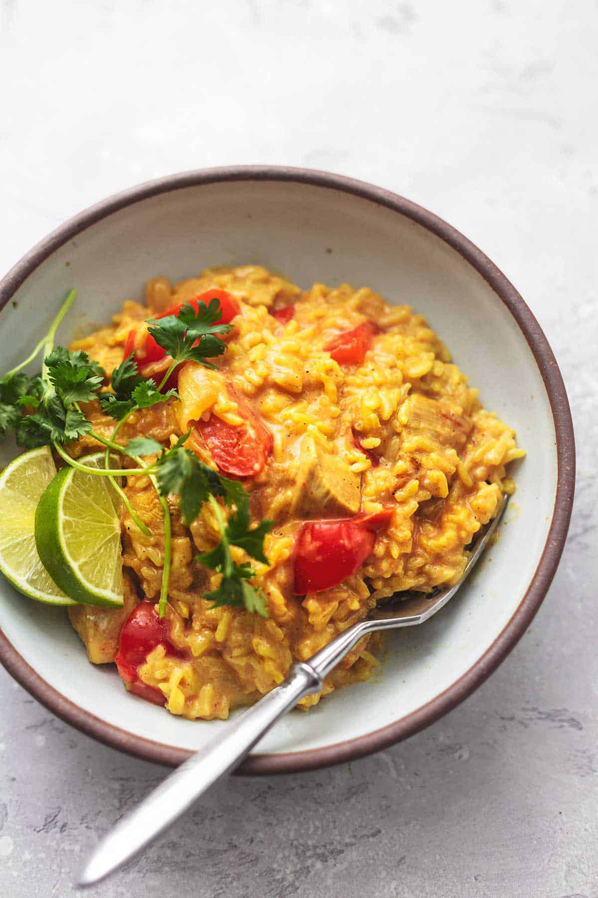

One Pot Chicken And Rice Curry Recipe

One pot meals are life! Make this One Pot Curry Chicken and Rice when you’re craving Indian
food but you don’t want to do a lot of dishes. Chicken and rice seasoned with curry and
coconut milk over fragrant Basmati rice hits the spot!
Ingredients
- Boneless skinless chicken breasts or thighs
- Oil
- Curry powder
- Salt
- White or Basmati rice
- Chicken broth
- Water
- Sugar
- Coconut milk
- Red bell pepper
- Onion
- Fresh cilantro or basil for garnish (optional)
Recipe
- So, go ahead and get out the pot in which you want to cook this curry chicken and rice dish. I use a large 2-inch-deep skillet with a lid. But you can use a Dutch oven or any other large pot with a lid.
- In that pot, add the oil and heat over a medium-high heat. Add the chicken, bell peppers, and onions to the oil and saute for 1 minute.
- Sprinkle the chicken with 1 tablespoon of curry powder and some salt. Keep stirring and cooking for about another minute or until the chicken is golden brown on the outside. Though it will not be cooked all the way through, you’ll be cooking it again in a couple steps so don’t worry. Take the chicken out of the pan and put into a dish and cover to keep warm.
- Next, using the same pan, add the rice, broth, water, salt, sugar, and the rest of the curry powder. Stir it all together again, and bring it to a boil. Reduce to a simmer after it starts to boil. Let the mixture boil and the rice cook for about 15 minutes with the lid on.
- Take the lid off for a moment while you add the chicken back into the pan on top of the rice, arranged in a single layer. Cook for another 10 minutes with the lid back on.
- And, last but not least, take the lid off again and stir in the coconut milk. That’s it! Garnish this diced chicken and rice recipe with fresh basil or cilantro and serve!